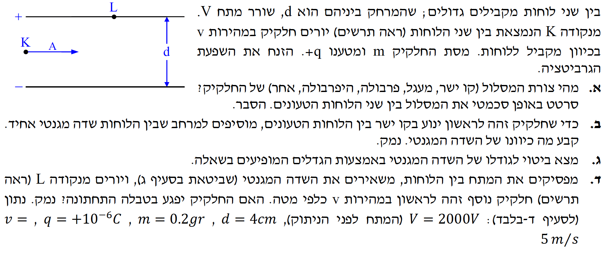

פתרון שאלה 4 - מבחן 1991
חשמל ומגנטיות - תנועת מטען בשדות משולבים
פתרון מודרך לפי דף נוסחאות, עם הדגשת הכיוונים הפיזיקליים בכל סעיף.
ver
vAUTO
|
auto

תמונת השאלה המקורית
לא נמצאה תמונה בשם question-image.png באותה תיקייה.
המרה ליחידות תקניות (
MKS
):
- מסה: \( m = 0.2\,gr = 2 \cdot 10^{-4}\,kg \)
- מטען: \( q = 10^{-6}\,C \)
- מהירות: \( v = 5\,m/s \)
- מרחק בין לוחות: \( d = 4\,cm = 0.04\,m \)
- מתח חשמלי: \( V = 2000\,V \)
- כבידה: מוזנחת לפי השאלה, לכן \( g = 0 \)
מה נתון: מטען חיובי נכנס במהירות אופקית \( v \) לשדה חשמלי אחיד בין לוחות מקבילים (עליון חיובי, תחתון שלילי).
מה מחפשים: צורת המסלול והסבר פיזיקלי לפי הכוחות הפועלים.
נוסחאות מהדף:
\( \Sigma \vec{F} = m\vec{a} \)
\( \vec{E} = \frac{\vec{F}}{q} \)
הערת מורה:
בציר האופקי אין כוח ולכן המהירות האופקית קבועה. בציר האנכי פועל כוח חשמלי קבוע כלפי מטה, ולכן יש תאוצה אנכית קבועה.
השילוב יוצר תנועת "זריקה אופקית" ומסלול פרבולי.
המחשה גרפית של המסלול:
מסלול פרבולי סכמטי בין הלוחות
מה נתון: החלקיק נע בקו ישר במהירות קבועה.
מה מחפשים: כיוון \( \vec{B} \) שיבטל את הכוח החשמלי.
נוסחאות מהדף:
\( \Sigma \vec{F} = 0 \)
כלל יד ימין
ניתוח:
כדי שהתנועה תהיה ישרה, השקול חייב להיות אפס.
הכוח החשמלי \( F_e \) פועל מטה, לכן הכוח המגנטי \( F_B \) חייב לפעול מעלה.
לפי כלל יד ימין למטען חיובי:
אגודל ימינה (כיוון \( v \)), כף יד מעלה (כיוון \( F_B \)),
ולכן כיוון האצבעות - לתוך הדף.
מסקנה: כיוון השדה המגנטי הוא לתוך הדף \( \otimes \).
מה נתון: תנועה בקו ישר במהירות \( v \), לוחות עם מתח \( V \) ומרחק \( d \).
מה מחפשים: ביטוי ל-\( B \) וחישוב מספרי.
נוסחאות מהדף:
\( F = qvB\sin\alpha \)
\( E = \frac{F}{q} \)
\( E = -\frac{\Delta V}{\Delta x} \)
פתרון צעד-אחר-צעד:
\[
\Sigma F = 0 \Rightarrow F_B = F_e
\]
\[
qvB = qE \Rightarrow vB = E
\]
\[
E = \frac{V}{d}
\]
\[
B = \frac{E}{v} = \frac{V}{d\,v}
\]
הצבה מספרית:
\[
B = \frac{2000}{0.04 \cdot 5} = \frac{2000}{0.2} = 10{,}000\,T
\]
מסקנה: \( B = 10{,}000\,Tesla \).
מה נתון: החלקיק נורה מטה מלוח עליון. המתח נותק ולכן \( E=0 \). פועל רק שדה מגנטי.
מה מחפשים: האם החלקיק יפגע בלוח התחתון.
נוסחאות מהדף:
\( a_R = \frac{v^2}{R} \)
\( \Sigma F = ma \)
\( F = qvB \)
פיתוח רדיוס התנועה:
\[
qvB = m\frac{v^2}{R}
\]
\[
R = \frac{mv}{qB}
\]
\[
R = \frac{2 \cdot 10^{-4} \cdot 5}{10^{-6} \cdot 10{,}000} = \frac{10^{-3}}{10^{-2}} = 0.1\,m = 10\,cm
\]
המרחק בין הלוחות הוא \( 4\,cm \), בעוד שרדיוס התנועה הוא \( 10\,cm \).
לכן הרדיוס גדול מן המרחק הזמין בין הלוחות, ולכן החלקיק יפגע בלוח התחתון.
מסקנה: כן, החלקיק פוגע בלוח התחתון.